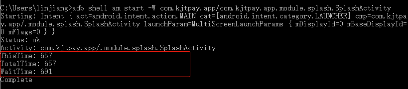
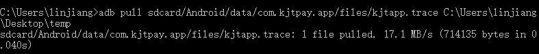
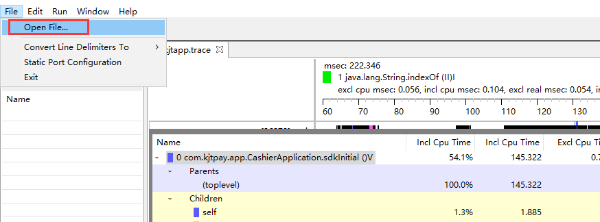
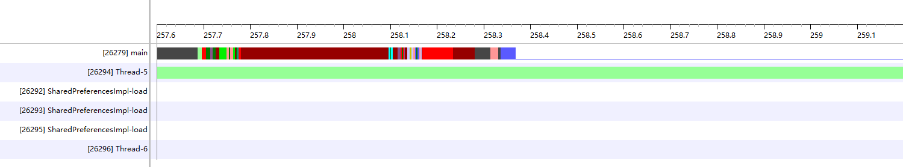
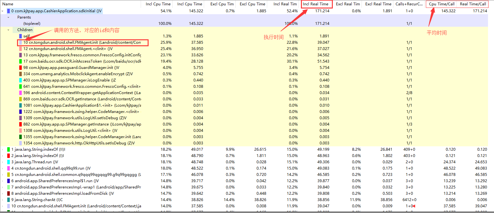
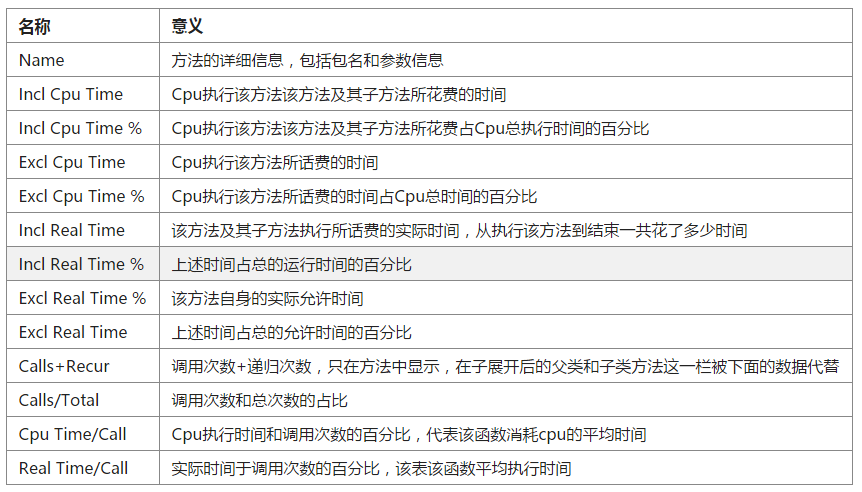

1，参考
TraceView 分析图
App启动速度优化之启动页设计
App启动速度优化之耗时检测处理
使用Debug.startMethodTracing后找不到对应的.trace文件
2，测试方法
1) 应用的启动时间统计
命令行：adb shell am start -W 【包名】/【首个Activity】

ThisTime: 调用过程中，最后一个Activity启动时间，到这个Activity的startActivityAndWait调用结束
TotalTime: 调用过程中，第一个Activity启动时间，到最后一个Activity的startActivityAndWait调用结束
WaitTime: 调用过程中，startActivityAndWait这个方法的调用耗时
关心应用自身启动耗时，参考TotalTime
关心系统启动应用耗时, 参考WaitTime
关心应用有界面Activity启动耗时，参考ThisTime
通常而言【经验】
创建APP，刚刚开始的运行时间为400ms左右
OkHttpClient初始化，加载SSL耗时在300ms左右；Fresco使用OkHttp可以采用使用时初始化策略
APP的启动时间在700-1000ms范畴内是可以接受的
2) APP内部API耗费时间统计
代码嵌入
Debug.startMethodTracing("kjtapp"); // 观察 开始的地方调用(public方法或生命周期方法)
Debug.stopMethodTracing(); // 观察 结束的地方调用(public方法或生命周期方法)
导出文件
sdcard/name.trace 或者 sdcard/Android/data/包名/files/name.trace 两个路径都有可能

DDMS打开
Android Studio3.0以后，界面上已经没有DDMS的入口，需要手动去找，路径："D:\study_androidstudio_sdk\tools\lib\monitor-x86_64\monitor.exe"

3，TraceView图案分析


片段图【图1】，表示哪些线程在执行，已经他们的时间比例，只能看个大概
数据图【图2】，重点！！！；它表明哪些你需要具体优化

Incl Real Time：表明实际上函数会执行多少时间 = 数量 * 每次执行时间；通常而言，超过100ms，则表明非优化不可
Real Time/Call: 表明函数每执行一次所耗费的时间
4，优化方案
1) 延时执行
找出耗时较高，并且允许异步初始化的部分。例如Fresco就不能异步初始化
第一种写法:直接PostDelay 1500ms.
myHandler.postDelayed(mLoadingRunnable, 1500);
第二种写法:优化的DelayLoad[仅适用于View,不适合Application]
getWindow().getDecorView().post(new Runnable() {
@Override
public void run() {
myHandler.post(mLoadingRunnable);
}
});
2) 给用户造成错觉
// 然后在首个Activity使用这个主题即可
<style name="SplashTheme" parent="Theme.AppCompat.Light">
<item name="android:windowIsTranslucent">true</item> // 导航栏去除
<item name="android:background">@android:color/transparent</item>
<item name="android:windowBackground">@drawable/splash_extend</item> // .9图片防止拉伸
<item name="android:windowNoTitle">true</item> // 去除标题栏
</style>